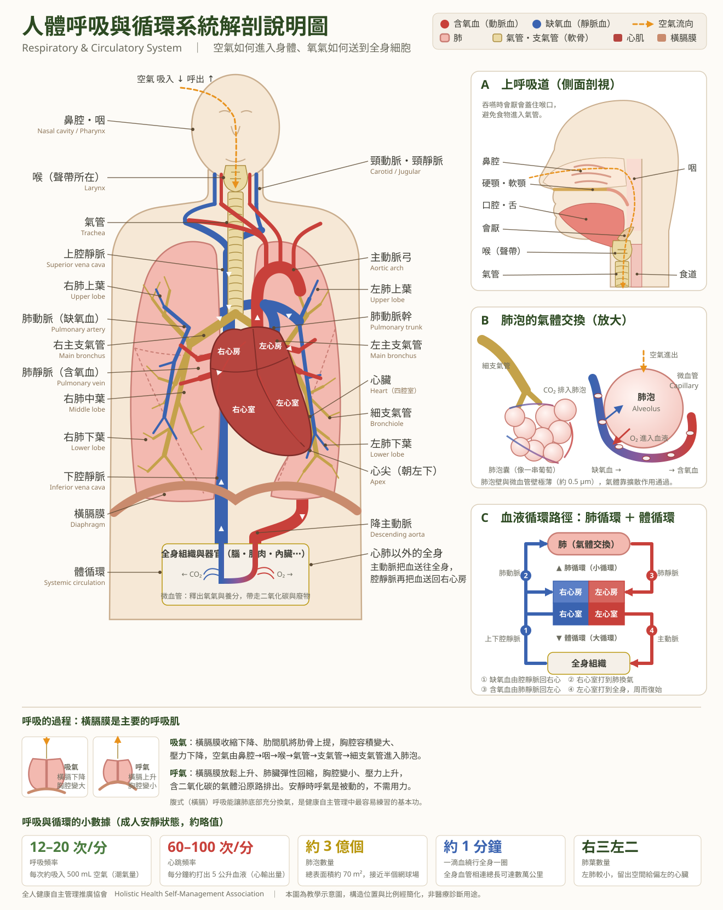

人體呼吸與循環系統解剖說明圖
空氣如何進入身體，氧氣又如何被送到全身每一個細胞。認識自己的身體，是健康自主管理的第一步。



空氣的路徑（呼吸系統）
- 鼻腔：過濾、加溫、加濕空氣
- 咽 → 喉（聲帶所在）
- 氣管 → 左右主支氣管
- 細支氣管 → 肺泡
- 肺泡與微血管進行氣體交換
血液的路徑（循環系統）
- 缺氧血經上下腔靜脈 → 右心房 → 右心室
- 右心室 → 肺動脈 → 肺（肺循環）
- 含氧血經肺靜脈 → 左心房 → 左心室
- 左心室 → 主動脈 → 全身（體循環）
- 微血管釋出氧氣、帶回二氧化碳，再回到右心房
呼吸的動力：橫膈膜
吸氣時橫膈膜收縮下降、胸腔擴大，空氣進入；呼氣時橫膈膜放鬆上升、胸腔縮小，氣體排出。腹式（橫膈）呼吸能讓肺底部充分換氣，是最容易練習的健康基本功。